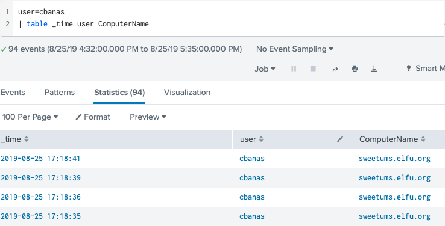
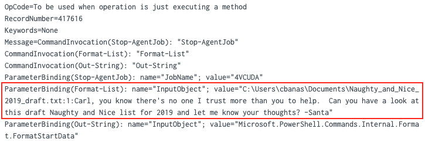
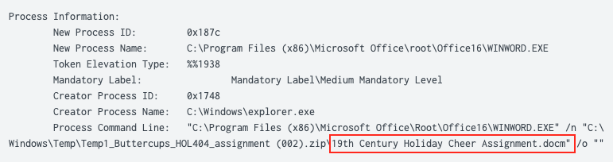
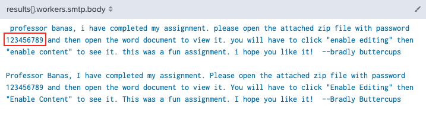
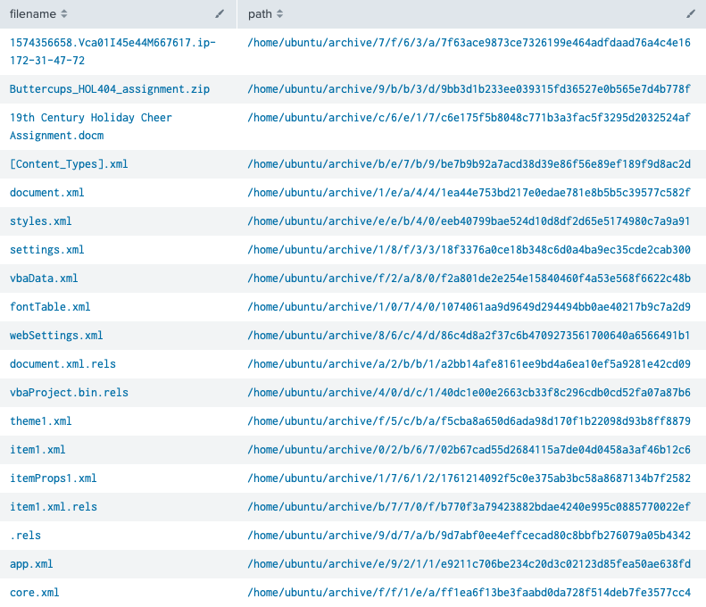

Splunk#
Hint: Tangle Coalbox - Frosty Keypad
Request#
Hi, I'm Dr. Banas, professor of Cheerology at Elf University.
This term, I'm teaching "HOL 404: The Search for Holiday Cheer in Popular Culture," and I've had quite a shock!
I was at home enjoying a nice cup of Gløgg when I had a call from Kent, one of my students who interns at the Elf U SOC.
Kent said that my computer has been hacking other computers on campus and that I needed to fix it ASAP!
If I don't, he will have to report the incident to the boss of the SOC.
Apparently, I can find out more information from this website with the username: elf / Password: elfsocks.
I don't know anything about computer security. Can you please help me?
Resources#
Solution#
Jump to the challenge solution.
Question 1#
"What is the short host name of Professor Banas' computer?"
The '#ELFU SOC' chat group has the answer to this question. Zippy mentions "Yep. And we have some system called 'sweetums' here on campus communicating with the same weird IP" to which Alice replies "Gah... that's Professor Banas' system from over in the Polar Studies department". To find the answer using Splunk we can use the following query as well.
index=main user=cbanas | table _time user ComputerName

Answer: sweetums
Question 2#
"What is the name of the sensitive file that was likely accessed and copied by the attacker? Please provide the fully qualified location of the file. (Example: C:\temp\report.pdf)"
Similar to question 1, searching for a simple keyword can provide useful results. In this case we query for the string 'santa' to find an event containing a message from Santa to professor Banas referencing the text file Naughty_and_Nice_2019_draft.txt.
index=main santa

Answer: C:\Users\cbanas\Documents\Naughty_and_Nice_2019_draft.txt
Note
The BASE64-encoded string found in this Splunk event decodes to a PowerShell script that tries to disable script block logging, downloads encrypted data from http://144.202.46[.]214:8080/admin/get.php (i.e. the command and control IP address found in LISA), decrypts it using an embedded key, and finally executes the decrypted code.
Question 3#
"What is the fully-qualified domain name(FQDN) of the command and control(C2) server? (Example: badguy.baddies.com)"
Search the collected Sysmon data for network connection activity (i.e. Sysmon event ID 3) and add 'powershell' to narrow down the results. Use fields like dest_host and DestinationHostname in the left sidebar to show specific information.
index=main sourcetype="XmlWinEventLog:Microsoft-Windows-Sysmon/Operational" powershell EventCode=3
Answer: 144.202.46.214.vultr.com
Question 4#
"What document is involved with launching the malicious PowerShell code? Please provide just the filename. (Example: results.txt)"
Start by searching for all PowerShell activity by specifying the appropriate source and reverse the sort order so the oldest search results are at the top of the list. Click on the timestamp and in the popup dialog select a +/- five-second window.
index=main sourcetype="WinEventLog:Microsoft-Windows-Powershell/Operational" | reverse

Now that we have all PowerShell activity in this 10-second timeframe we need to pivot to another source to find the associated process IDs. Powershell logs don't provide this information but Sysmon logs do so replace the PowerShell sourcetype with the one for Sysmon and look at the process_id or ProcessId fields.
index=main source="WinEventLog:Microsoft-Windows-Sysmon/Operational"

Now that we have two process IDs we need to determine what was responsible for spawning these PowerShell processes. Process creation events can be found in either Sysmon logs as Sysmon event ID 1 or in Windows logs as Windows event ID 4688. When searching for the latter, any process ID values need to be specified in hexadecimal. So, 5864 and 6268 have to be translated to 0x16E8 and 0x187C. Be sure to set the search window to 'All time' again as the parent process for these PowerShell processes will most likely fall outside of the currently selected 10-second timeframe.
index=main sourcetype=WinEventLog EventCode=4688 (process_id=0x16e8 OR process_id=0x187c)

Answer: 19th Century Holiday Cheer Assignment.docm
Question 5#
"How many unique email addresses were used to send Holiday Cheer essays to Professor Banas? Please provide the numeric value. (Example: 1)"
According to Alice "You should be aware that Professor Banas was very clear in his instructions to his students: All assignment submissions must be made via email and must have the subject 'Holiday Cheer Assignment Submission'". As email addresses are not case sensitive we need to make sure we don't double-count any search results. Search stoQ logs for the correct subject line and count the number of results.
index=main sourcetype=stoq "results{}.workers.smtp.subject"="Holiday Cheer Assignment Submission"
| stats count by results{}.workers.smtp.subject

Answer: 21
Question 6#
"What was the password for the zip archive that contained the suspicious file?"
MITRE ATT&CK Technique 1193 which Alice refers to is 'Spearphishing Attachment'. If the document is password protected then the attacker needs to let the victim know the password in order to open the document and execute the malicious code. In other words, we should be able to find a mention of it in the body of an email.
index=main sourcetype=stoq "results{}.workers.smtp.body"=*password*
| table results{}.workers.smtp.from results{}.workers.smtp.body

Answer: 123456789
Question 7#
"What email address did the suspicious file come from?"
The answer is provided by exactly the same Splunk query we used for the previous question.
index=main sourcetype=stoq "results{}.workers.smtp.body"=*password*
| table results{}.workers.smtp.from results{}.workers.smtp.body

Answer: bradly.buttercups@eifu.org
Challenge#
"What was the message for Kent that the adversary embedded in this attack?"
Alice provides the initial Splunk query to get us started. stoQ will store any file metadata in Splunk but the raw artifact is uploaded to the File Archive. Start by running Alice's query and look at the JSON output. The combination of archivers.filedir.path and payload_meta.extra_data.filename in the results array provides the path to each artifact in the Elf-U File Archive.
index=main sourcetype=stoq "results{}.workers.smtp.from"="bradly buttercups <bradly.buttercups@eifu.org>"

Next we extract the results array using spath, loop over its items using mvexpand, and for each list item extract both archivers.filedir.path and payload_meta.extra_data.filename (again, using spath). To keep things clean we only show results where archivers.filedir.path is not an empty string.
index=main sourcetype=stoq "results{}.workers.smtp.from"="bradly buttercups <bradly.buttercups@eifu.org>"
| eval results = spath(_raw, "results{}")
| mvexpand results
| eval path=spath(results, "archivers.filedir.path"),
filename=spath(results, "payload_meta.extra_data.filename")
| search path!=""
| table filename, path

The obvious candidates for further investigation are Buttercups_HOL404_assignment.zip and 19th Century Holiday Cheer Assignment.docm but both of these have been sanitized and contain a warning message. Luckily the .docm artifact also provides a hint about core.xml, stating "The core.xml file that was a component of this original macro-enabled Word doc is still in this File Archive thanks to stoQ. Find it and you will be a happy elf :-)". Saves us some work of having to verify all remaining artifacts.

Answer: Kent you are so unfair. And we were going to make you the king of the Winter Carnival.
All of the 20 remaining documents, who submitted them, the associated File Archive link, and email message body can be retrieved using the below Splunk query. Looks like some of the elves spent just a little more time on this assignment than others.
index=main sourcetype=stoq "results{}.workers.smtp.subject"="Holiday Cheer Assignment Submission"
| eval results = spath(_raw, "results{}"),
from = spath(_raw, "results{}.workers.smtp.from"),
body = spath(_raw, "results{}.workers.smtp.body")
| mvexpand results
| eval path=spath(results, "archivers.filedir.path"),
filename=spath(results, "payload_meta.extra_data.filename")
| search filename="*.docx" OR filename="*.zip"
| table from, filename, path, body

Answer#
sweetumsC:\Users\cbanas\Documents\Naughty_and_Nice_2019_draft.txt144.202.46.214.vultr.com19th Century Holiday Cheer Assignment.docm21123456789bradly.buttercups@eifu.orgKent you are so unfair. And we were going to make you the king of the Winter Carnival.
Hint#
Oh, thanks so much for your help! Sorry I was freaking out.
I've got to talk to Kent about using my email again...
...and picking up my dry cleaning.